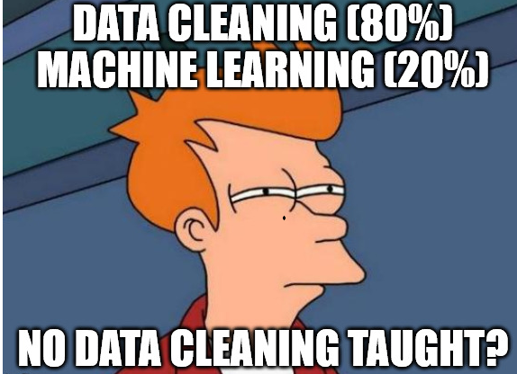

#6 Learning Regular Expressions
Alex Flückiger
Faculty of Humanities and Social
Sciences
University of Lucerne
7 April 2022
Please contact us via info@organization.org.
---
For specific questions ask Mrs. Green (a.green@mail.com).
---
Reach out to support@me.ch👉 Solution: Write a single pattern to match any valid email adress
[A-Z0-9._%+-]+@[A-Z0-9.-]+\.[A-Z]{2,} # match any email address (case-insensitive)… specific parts in texts

\w represents alphanumeric characters[Cc]o+l → Col, col, Cool, coool …# check a regular expression quickly
echo "check this pattern" | egrep "pattern"
egrep "yes" file.txt # search in a specific file
egrep -r "yes" folder # search recursively within folder
egrep "yes" *.txt # keep lines containing pattern (yes) across txt-files
egrep -i "yes" *.txt # dito, ignore casing (Yes, yes, YES ...)
egrep -v "noisy" *.txt # do NOT keep lines containing noisy
# extract raw match only to allow for subsequent counting
egrep -o "only" *.txt # print match only instead of entire line
egrep -h "only" *.txt # suppress file nameX times? zero or one+ one or more* zero or any number{n}, {m,n} a specified number of
timesegrep -r "Bundesrath?es" # match old and new spelling
egrep -r "a+" # match one or more "a"
egrep -r "e{2}" # match sequence of two "e"⚠️ Do not confuse regex with Bash wildcards!
[...] any of the characters between brackets
[auoei][0-9][A-Za-z][^...] any character but none of these (negation)
[^auoei]# match the capitalized and non-capitalized form
egrep -r "[Gg]rüne"
# match sequences of 3 vowels
egrep -r [aeiou]{3}
# extract all bigrams (sequence of two words)
egrep -rohi "[a-z]+ [a-z]+". matches any character (excl. newline)\ escapes to match literal
\. means the literal . instead of “any
symbol”\w matches any alpha-numeric character
[A-Za-z0-9_]\s matches any whitespace (space, newline, tab)
[ \t\n]# match anything between brackets
egrep -r "\(.*\)".* …matches any character any times
# extract basename of URLs
egrep -ro "www\.\w+\.[a-z]{2,}"
# extract valid email adresses (case-insensitive)
egrep -iro "[A-Z0-9._%+-]+@[A-Z0-9.-]+\.[A-Z]{2,}" **/*.txt
# count political areas by looking up words ending with "politik"
egrep -rioh "\w*politik" **/*.txt | sort | uniq -c | sort -h
# count ideologies/concepts by looking up words ending with "ismus"
egrep -rioh "\w*ismus" **/*.txt | sort | uniq -c | sort -hgit pull. Change in to the directory
materials/data/swiss_party_programmes/txt.egrep to extract all uppercased words like
UNO, OECD, SP and count their frequency.egrep to extract all plural nouns with female
endings e.g. Schweizerinnen (starting with an uppercase
letter, ending with innen, and any letter in between). Do
the same for the male forms. Is there a qualitative or a quantitative
difference between the gendered forms?# Some not so random hints
piping with |
sort
uniq -c
egrep -roh **/*.txtegrep to extract all uppercased words like
UNO, OECD, SP and count their frequency.
egrep -roh "[A-Z]{2,}" **/*.txt | sort | uniq -c | sort -hegrep to extract all plural nouns with female
endings e.g. Schweizerinnen (starting with an uppercase
letter, ending with innen, and any letter in between). Do
the same for the male forms. Is there a qualitative or a quantitative
difference between the gendered forms?
egrep -roh "[A-Z][a-z]+innen\b" **/*.txt | sort | uniq -c | sort -hegrep -roh "[A-Z][a-z]+er\b" **/*.txt | sort | uniq -c | sort -h
(there is no way with regular expression to extract only nouns of the
male form but not Wasser and the like. For this, you have
to use some kind of machine learning.)sed "s/WHAT/WITH/g" file.txtsed replaces any sequence, tr only single
symbolsecho "hello" | sed "s/llo/y/g" # replace "llo" with a "y"
# by setting the g flag in "s/llo/y/g",
# sed replaces all occurences, not only the first one(group_pattern)\1 equals the expression inside first pair of
parentheses\2 expression of second pair# swap order of name (last first -> first last)
echo "Lastname Firstname" | sed -E "s/(.+) (.+)/\2 \1/"
# matching also supports grouping
# match any pair of two identical digits
egrep -r "([0-9])\1"\b matches word boundary
word\b does not match words^ matches begin of line and $ end of line
^A matches only A at line start| is a disjunction (OR)
(Mr|Mrs|Mr\.|Mrs\.) Green matches alternatives* or + are greedy[^EXCLUDE_SYMBOLS] instead of .*# greedy: an apple, other apple
echo "an apple, other apple" | egrep "a.*apple"
# non-greedy: an apple
echo "an apple, other apple" | egrep "a[^,]*apple"egrep to extract capitalized words and count them.
What are the most frequent nouns?egrep to extract words following any of these
strings: der die das. Hint: Use a disjunction.sed -E to remove the table of content, the footer
and the page number in the programme of the Green Party. Check the
corresponding PDF to get a visual impression and test your regular
expression with egrep first to see if you match the correct
parts in the document.egrep to extract capitalized words and count them.
What are the most frequent nouns?
egrep -roh "[A-Z][a-z]+" **/*.txt | sort | uniq -c | sort -hegrep to extract words following any of these
strings: der die das. Hint: Use a disjunction.
egrep -roh "(der|die|das) \w+" **/*.txtsed -E to remove the table of content, the footer
and the page number in the programme of the Green Party. Check the
corresponding PDF to get a visual impression and test your regular
expression with egrep first to see if you match the correct
parts in the document.
cat gruene_programme_2019.txt | sed "1,192d" | sed -E "s/^Wahlplattform.*2023$//g" | sed -E "s/^[0-9]+$//g"a+ == aa* # "a" once or more than once
a? == (a|_) # "a" once or nothing
a{3} == aaa # three "a"
a{2,3} == (aa|aaa) # two or three "a"
[ab] == (a|b) # "a" or "b"
[0-9] == (0|1|2|3|4|5|6|7|8|9) #any digit1'000, 1,000 or 5%). Then, count all the words while
excluding the numbers themselves. Hint: Pipe another grep to remove the
digits.egrep -hoir "\b[a-z]+ [a-z]+\b" | sort | uniq -c | sort -hegrep -hoir "\b[a-z]+ [a-z]+ [a-z]+\b" | sort | uniq -c | sort -h1'000, 1,000 or 5%). Then, count all the words while
excluding the numbers themselves. Hint: Pipe another grep to remove the
digits.
egrep -rhoi "[0-9][0-9,'%]+ [a-z]+" | egrep -io "[a-z]+" | sort | uniq -c | sort -hegrep -rhoi "[0-9][0-9,'%]+ [a-z]+" | sed -E "s/[0-9][0-9,'%]+//g" | sort | uniq -c | sort -hSince you know about RegEx, we can use a more sophisticated
tokenizer to split a text into words. What is the difference between the
old and new approach? Test it and check the helper page with
man.
# new, improved approach
cat text.txt | tr -sc "[a-zäöüA-ZÄÖÜ0-9-]" "\n"
# old approach
cat text.txt | tr " " "\n"